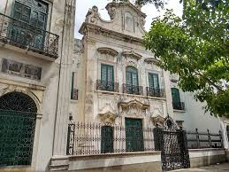

História
A Capela da Ordem Terceira de São Francisco, construída entre 1696 e 1724, apresenta um dos mais importantes conjuntos de talhas portuguesas no Brasil. É conhecida por Capela Dourada pelo fato de cada polegada de seu interior estar revestida de ouro. Integra o Conjunto Franciscano do Recife e é a única do circuito que cobra taxa de visitação, já que compõem o Museu Franciscano de Arte Sacra.
